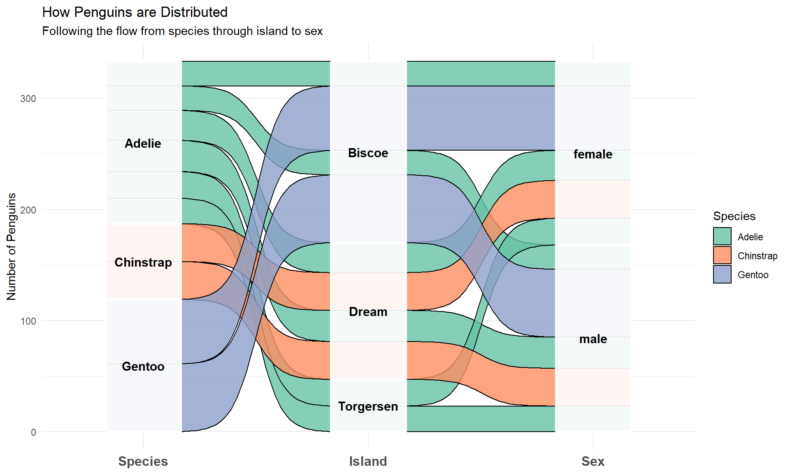

Code
library(ggplot2)
library(palmerpenguins)
library(dplyr)This chapter covers specialised visualisation techniques that don’t fit neatly into other categories but are incredibly useful for specific types of data and questions. Think of these as tools for your “advanced visualisation toolkit”—you won’t use them every day, but when you need them, they’re perfect for the job.
We’ll explore: - Visualising three-dimensional relationships - Displaying flows and transitions - Creating comparison matrices - Specialised chart types for specific purposes
Let’s load our packages:
library(ggplot2)
library(palmerpenguins)
library(dplyr)When you want to show three continuous variables simultaneously, bubble charts are an excellent choice. They’re essentially scatterplots where point size represents a third variable.
Let’s explore the relationship between penguin flipper length, body mass, and bill length:
ggplot(penguins, aes(x = flipper_length_mm,
y = body_mass_g,
size = bill_length_mm)) +
geom_point(alpha = 0.6) +
labs(title = "Penguin Physical Characteristics",
x = "Flipper Length (mm)",
y = "Body Mass (g)",
size = "Bill Length (mm)")
Let’s improve this with better styling and add a fourth variable (species) using colour:
ggplot(penguins, aes(x = flipper_length_mm,
y = body_mass_g,
size = bill_length_mm,
color = species)) +
geom_point(alpha = 0.6, shape = 16) +
scale_size_continuous(range = c(2, 12)) +
scale_color_viridis_d() +
labs(title = "Four Variables in One Visualization",
subtitle = "Bubble size represents bill length",
x = "Flipper Length (mm)",
y = "Body Mass (g)",
size = "Bill Length (mm)",
color = "Species") +
theme_minimal()
The scale_size_continuous(range = c(2, 12)) controls the minimum and maximum bubble sizes.
Bubble charts are controversial because humans are better at judging length than area. Use them when the approximate relationship is more important than exact values.
Heatmaps display data values as coloured cells, making patterns immediately visible. They’re particularly useful for comparing many variables at once.
Let’s visualise correlations between penguin measurements:
# Prepare data - select numeric columns only
pnum <- penguins %>%
select(bill_length_mm, bill_depth_mm,
flipper_length_mm, body_mass_g) %>%
na.omit()
# Calculate correlation matrix
corMat <- cor(pnum)
# Convert to long format for ggplot
library(tidyr)
corLong <- corMat %>%
as.data.frame() %>%
mutate(var1 = rownames(.)) %>%
pivot_longer(cols = -var1,
names_to = "var2",
values_to = "correlation")
# Create heatmap
ggplot(corLong, aes(x = var1, y = var2, fill = correlation)) +
geom_tile(color = "white") +
geom_text(aes(label = round(correlation, 2)),
color = "black", size = 4) +
scale_fill_gradient2(low = "blue", mid = "white", high = "red",
midpoint = 0, limits = c(-1, 1)) +
labs(title = "Correlation Matrix of Penguin Measurements",
x = "", y = "", fill = "Correlation") +
theme_minimal() +
theme(axis.text.x = element_text(angle = 45, hjust = 1))
Strong positive correlations appear in red, negative correlations in blue, and weak correlations in white.
A scatterplot matrix shows relationships between multiple variables in a grid format. It’s like seeing all possible pairs of scatterplots at once.
library(GGally)
# Select variables for the matrix
sub <- penguins %>%
select(bill_length_mm, bill_depth_mm,
flipper_length_mm, body_mass_g, species) %>%
na.omit()
# Create scatterplot matrix
ggpairs(sub,
aes(color = species, alpha = 0.5),
columns = 1:4) +
labs(title = "Relationships Between Penguin Measurements") +
theme_bw()
Reading the matrix:
You can customise the appearance with your own functions:
# Custom function for density plots
myDensity <- function(data, mapping, ...) {
ggplot(data = data, mapping = mapping) +
geom_density(alpha = 0.6, fill = "steelblue")
}
# Custom function for scatterplots
myScatter <- function(data, mapping, ...) {
ggplot(data = data, mapping = mapping) +
geom_point(alpha = 0.4, color = "steelblue", size = 1.5) +
geom_smooth(method = "lm", se = FALSE, color = "darkred", linewidth = 0.8)
}
# Create customized matrix
pnumOnly <- penguins %>%
select(bill_length_mm, bill_depth_mm,
flipper_length_mm, body_mass_g) %>%
na.omit()
ggpairs(pnumOnly,
lower = list(continuous = myScatter),
diag = list(continuous = myDensity)) +
labs(title = "Penguin Measurements: Detailed Relationships") +
theme_minimal()
Alluvial diagrams (also called Sankey diagrams) show how categorical variables relate to each other through flowing connections. They’re perfect for showing composition changes across groups.
Let’s examine how penguins are distributed across species, islands, and sex:
library(ggalluvial)
# Prepare data
flows <- penguins %>%
filter(!is.na(sex)) %>%
group_by(species, island, sex) %>%
summarise(count = n(), .groups = "drop")
# Create alluvial diagram
ggplot(flows,
aes(axis1 = species,
axis2 = island,
axis3 = sex,
y = count)) +
geom_alluvium(aes(fill = species), alpha = 0.7) +
geom_stratum(alpha = 0.8) +
geom_text(stat = "stratum", aes(label = after_stat(stratum))) +
scale_x_discrete(limits = c("Species", "Island", "Sex"),
expand = c(0.1, 0.1)) +
scale_fill_viridis_d() +
labs(title = "Penguin Distribution Across Categories",
y = "Count") +
theme_minimal() +
theme(legend.position = "none")
How to read this:
Let’s create a more detailed version with better styling:
ggplot(flows,
aes(axis1 = species,
axis2 = island,
axis3 = sex,
y = count)) +
geom_alluvium(aes(fill = species),
color = "black",
alpha = 0.8,
curve_type = "sigmoid") +
geom_stratum(alpha = 0.9, color = "white", linewidth = 1) +
geom_text(stat = "stratum",
aes(label = after_stat(stratum)),
size = 4, fontface = "bold") +
scale_x_discrete(limits = c("Species", "Island", "Sex"),
expand = c(0.15, 0.15)) +
scale_fill_brewer(palette = "Set2") +
labs(title = "How Penguins are Distributed",
subtitle = "Following the flow from species through island to sex",
y = "Number of Penguins",
fill = "Species") +
theme_minimal() +
theme(axis.text.x = element_text(size = 12, face = "bold"))
Waterfall charts illustrate the cumulative effect of sequential positive and negative values. They’re commonly used in finance but work for any cumulative process.
library(waterfalls)
# Create sample budget data
budget <- data.frame(
category = c("Research Grant", "Equipment", "Software",
"Lab Supplies", "Travel", "Conference Fees"),
amount = c(50000, -15000, -3000, -8000, -5000, -2000)
)
# Create basic waterfall chart
waterfall(budget) +
labs(title = "Research Budget Breakdown",
x = "", y = "Amount ($)") +
theme_minimal()
Let’s add a total column to show the final balance:
waterfall(budget,
calc_total = TRUE,
total_axis_text = "Remaining",
total_rect_text_color = "black",
total_rect_color = "gold") +
scale_y_continuous(labels = scales::dollar) +
labs(title = "Research Project Financial Flow",
subtitle = "Tracking income and expenses",
x = "", y = "") +
theme_minimal()
This shows clearly how the initial grant is allocated across different expenses.
Heatmaps can be good for visualising changes over time. Let’s create one using economic data:
# Prepare time series data
econMonth <- economics %>%
mutate(year = lubridate::year(date),
month = lubridate::month(date, label = TRUE)) %>%
filter(year >= 2000, year <= 2015) %>%
select(year, month, unemploy) %>%
mutate(unemploy_scaled = scale(unemploy)[,1])
# Create heatmap
ggplot(econMonth, aes(x = month, y = factor(year), fill = unemploy_scaled)) +
geom_tile(color = "white", linewidth = 0.5) +
scale_fill_gradient2(low = "darkgreen", mid = "white", high = "darkred",
midpoint = 0,
name = "Unemployment\n(Scaled)") +
labs(title = "US Unemployment Patterns by Month and Year",
subtitle = "Red indicates higher unemployment, green indicates lower",
x = "Month", y = "Year") +
theme_minimal() +
theme(axis.text.x = element_text(angle = 45, hjust = 1))
This reveals seasonal patterns and trends across years.
| Chart Type | Best For | Avoid When |
|---|---|---|
| Bubble Chart | 3-4 continuous variables | Need precise values |
| Heatmap | Many variables, patterns in matrices | Few data points |
| Scatterplot Matrix | Exploring relationships between 3-6 variables | More than 7 variables |
| Alluvial Diagram | Categorical flows, composition changes | Simple counts are sufficient |
| Waterfall Chart | Cumulative effects, sequential changes | All values are similar |
The key is knowing when to use each technique. Start simple, and only use these specialised charts when they truly add insight that simpler visualisations can’t provide.
economics dataset numeric variables